Resource Library for Data Security Insights
TrustLogix guides, case studies, ebooks, webinars and more.
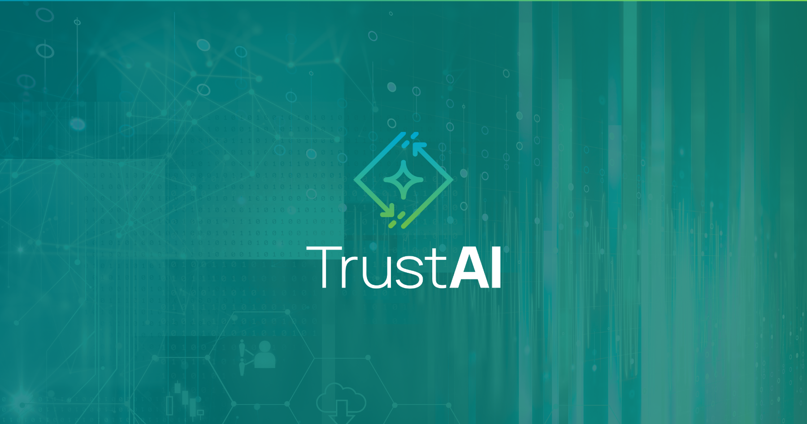
How a Leading Financial Services Firm is Securing Autonomous AI Agents with TrustAI
A leading financial services firm deployed dozens of autonomous AI agents at scale while maintaining regulatory compliance and zero-trust security using TrustLogix TrustAI. Download the case study to see how TrustAI's agent-aware governance enabled accelerated AI innovation with real-time visibility, proven compliance, and zero performance impact. Read more Read more
Read More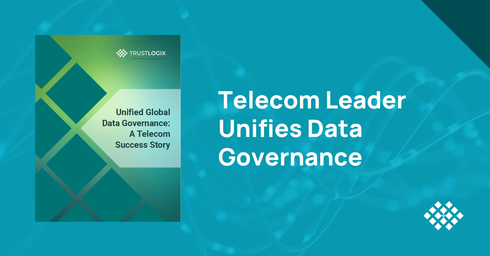
Unified Global Data Governance: A Telecom Success Story
Global telecom leader unified data governance with TrustLogix, boosting compliance, security, and innovation. Read more Read more
Read More
Scaling Secure Data Access: A Fortune 500 Healthcare Success Story
TrustLogix enabled a global healthcare leader to unify access, meet compliance, and accelerate secure data use. Read more Read more
Read More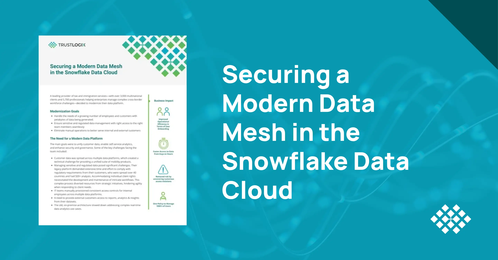
Securing a Modern Data Mesh in the Snowflake Data Cloud
A global mobility vendor used TrustLogix to modernize data, protect sensitive information, and improve compliance and analytics. Read more Read more
Read More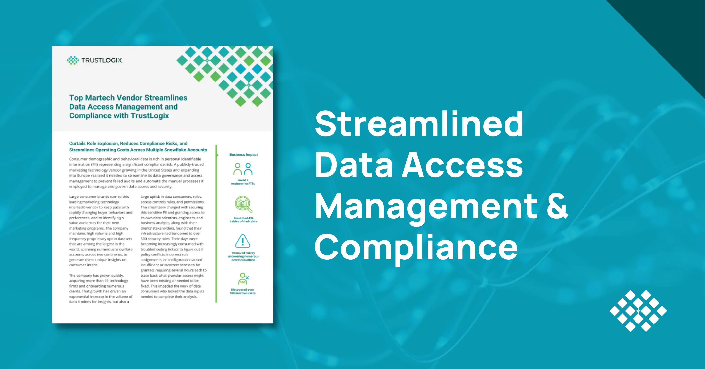
Top Martech Vendor Streamlines Data Access Management and Compliance with TrustLogix
TrustLogix helped a global MarTech vendor manage role explosion, reduce risk, and strengthen data governance. Read more Read more
Read More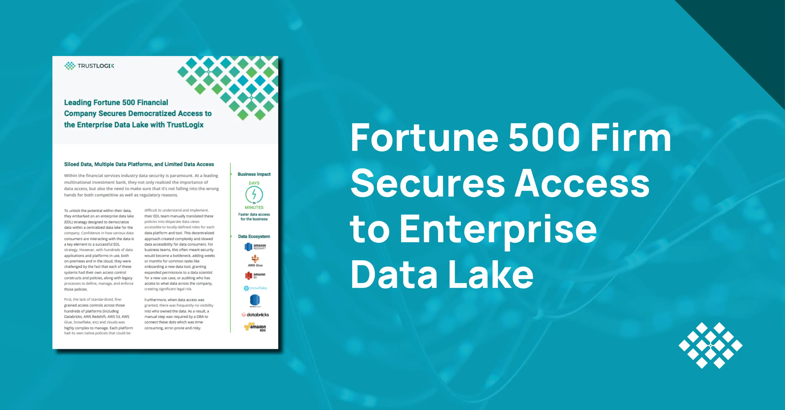
Leading Fortune 500 Financial Company Secures Democratized Access to the Enterprise Data Lake with TrustLogix
Learn how TrustLogix removed silos and bottlenecks, delivering secure, compliant data access across all cloud platforms. Read more Read more
Read More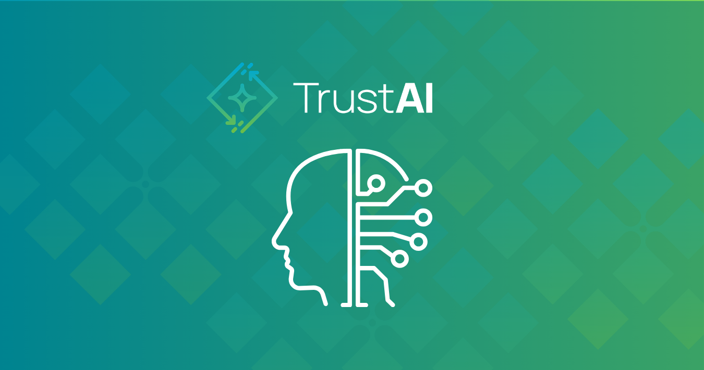
Securing Agentic AI in the MCP Era
TrustAI is the policy control plane for AI agent data security. It intercepts every MCP request in real time, enforcing fine-grained access controls across Snowflake, Databricks, and enterprise systems before data is ever accessed. Read more Read more
Read More
Why Security Teams Are Replacing IBM Guardium with TrustLogix
IBM Guardium's agent-based architecture wasn't built for cloud. See how TrustLogix replaces legacy data activity monitoring with a single, agentless platform covering on-prem, hybrid, and cloud. Read more Read more
Read More
Solution Brief: Preemptive Data Security for the Age of AI Agents
Stop AI data leaks before they happen. TrustAI by TrustLogix provides preemptive security and JIT access control for AI agents, ensuring PII/PHI protection across multi-cloud environments. Secure your AI innovation today. Read more Read more
Read More
About TrustLogix
Enterprises need to move faster with AI, but fragmented access and inconsistent data controls slow progress and add risk. TrustLogix gives teams unified, secure access to the data that drives AI—so innovation moves quickly, safely. Read more Read more
Read More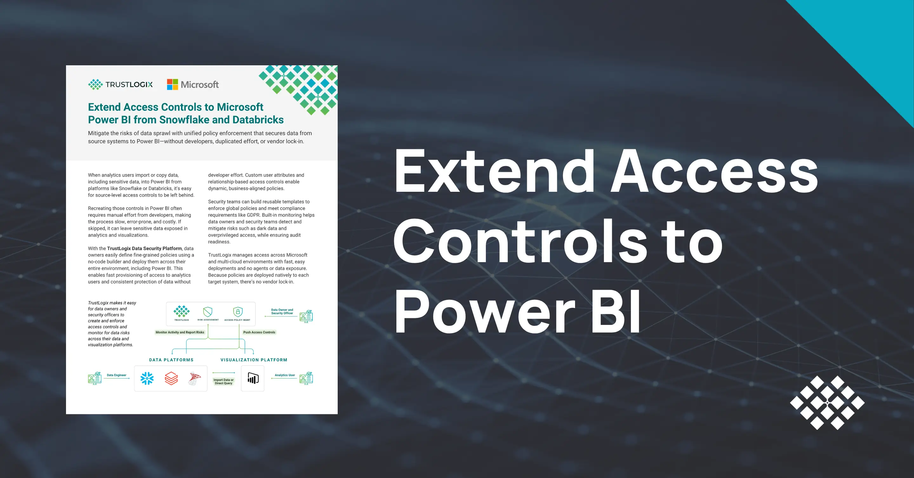
Extend Access Controls to Microsoft Power BI
Extend Snowflake and Databricks access controls to Power BI with TrustLogix for fast, secure, and compliant analytics. Read more Read more
Read More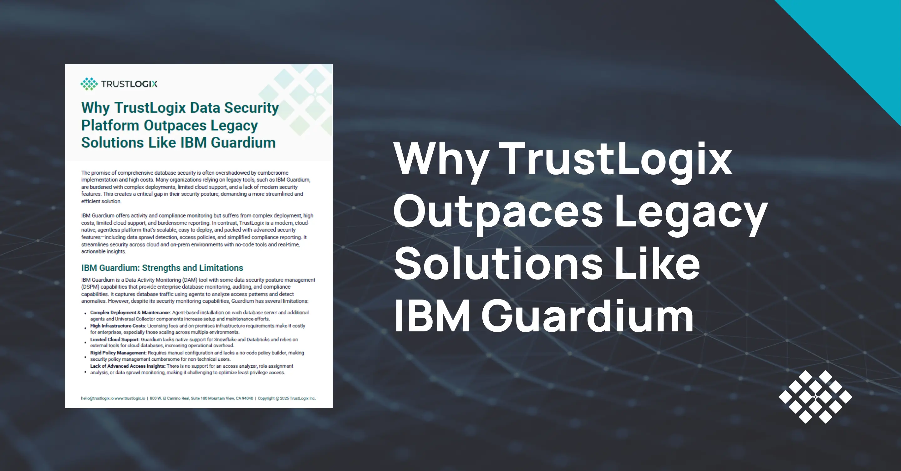
Why TrustLogix Data Security Platform Outpaces Legacy Solutions Like IBM Guardium
TrustLogix outpaces IBM Guardium with cloud-native, agentless data security that’s faster, simpler, and more cost-effective. Read more Read more
Read MoreEnterprise-Grade Security for Databricks
TrustLogix enhances Databricks with fine-grained access controls, risk remediation, and unified governance. Read more Read more
Read More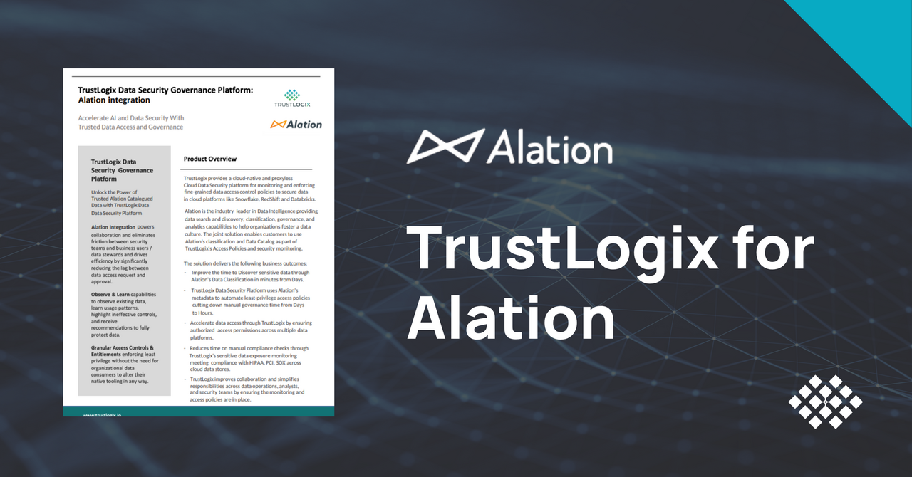
TrustLogix Data Security Governance Platform: Alation Integration
Accelerate secure cloud data access with TrustLogix and Alation’s integration for governance, compliance, and efficiency. Read more Read more
Read More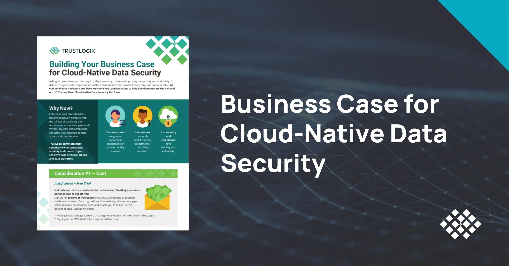
Building Your Business Case for Cloud-Native Data Security
Secure data across clouds in minutes. Centralize controls, reduce risk, and boost efficiency with TrustLogix. Read more Read more
Read More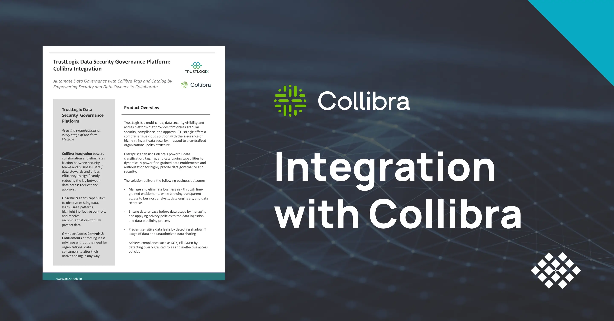
TrustLogix Data Security Governance Platform: Collibra Integration
Automate data governance with TrustLogix + Collibra. Strengthen security, streamline access, and ensure compliance. Read more Read more
Read More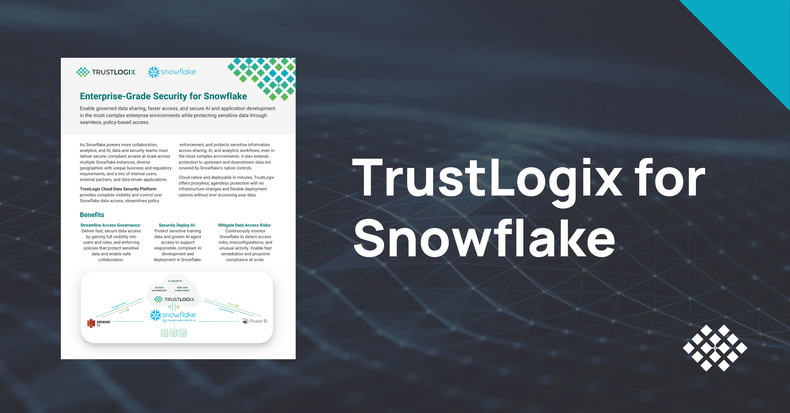
Enterprise-Grade Security for Snowflake
Secure Snowflake access at scale with TrustLogix. Govern data, protect AI, and stay compliant with zero friction. Read more Read more
Read More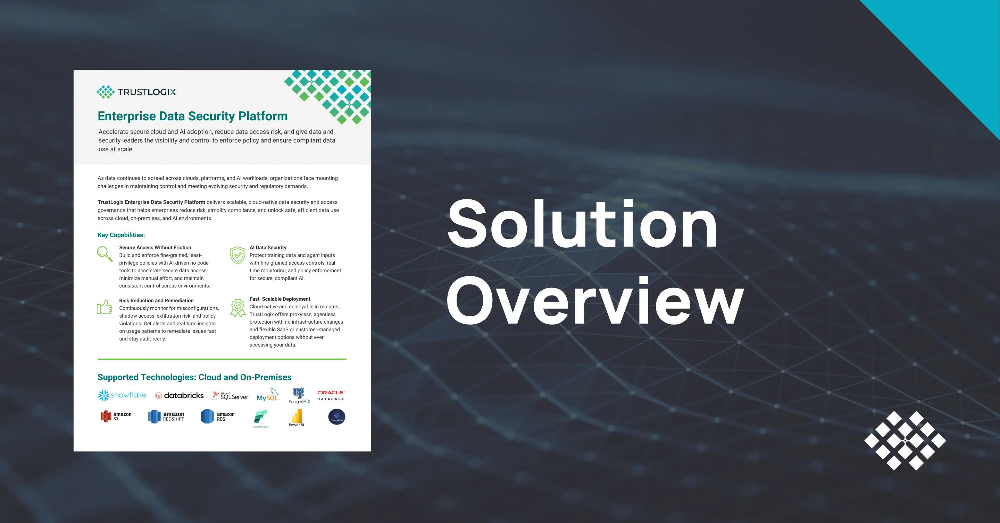
TrustLogix Solution Overview
Secure data across cloud and AI with TrustLogix. Enforce policies, reduce risk, and simplify compliance at scale. Read more Read more
Read More
Ebook
Data Security for Agentic AI See how data and security leaders can govern AI data access with clarity and speed. Understand the real risks, the new architectural requirements, and the practical steps enterprises are using today to make AI safe at scale. Read more Read more
Read More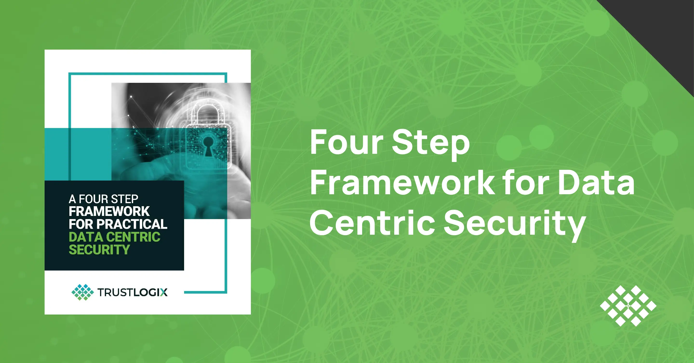
A Four Step Framework for Practical Data Centric Security
Discover how to implement practical data-centric security with a four-step framework for access, protection, and compliance. Read more Read more
Read More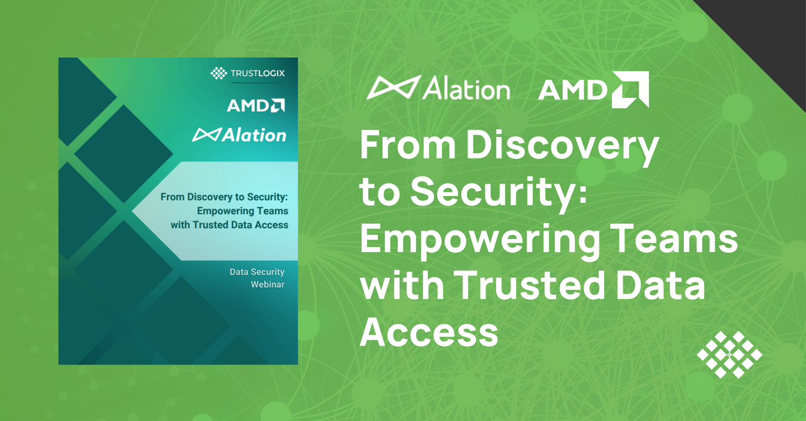
From Discovery to Security: Empowering Teams with Trusted Data Access
Discover best practices from AMD, Alation, and TrustLogix for automating data governance, security, and access control. Read more Read more
Read More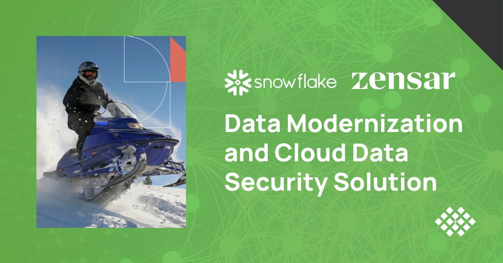
Data Modernization and Cloud Data Security Solution
Discover how to simplify cloud migration while strengthening security, compliance, and governance. Read more Read more
Read More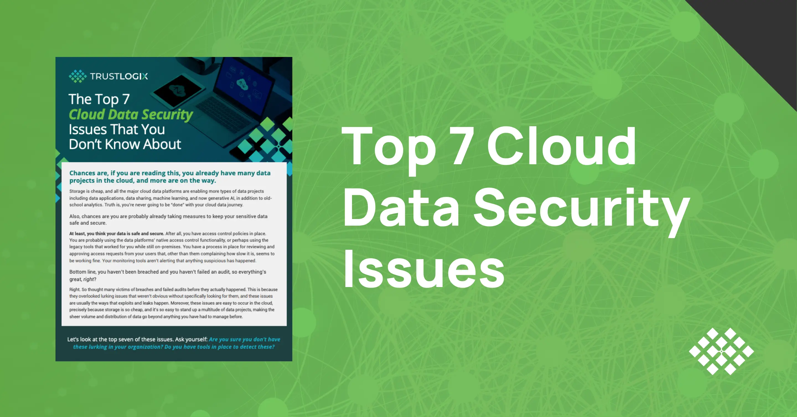
The Top 7 Cloud Data Security Issues That You Don't Know About
Discover 7 overlooked cloud data security dangers, including dark data and sprawl, that put your organization at risk. Read more Read more
Read More
Get the Gartner Report: Use Agile, Adaptive, AI-Ready (3A) Data Security Governance to Secure Shadow AI
This recent Gartner® report outlines a practical framework for evolving data security controls to match AI's pace: just-in-time access, automated scanning, adaptive policy enforcement, and AI agent monitoring. Required reading for CISOs navigating the gap between AI adoption and data security. Read more Read more
Read More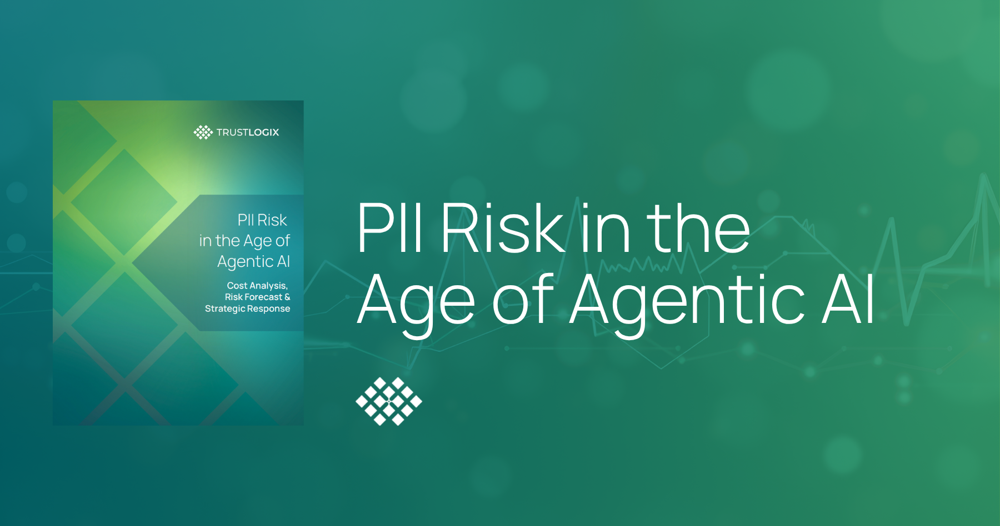
PII Risk in the Age of Agentic AI
AI agents can generate thousands of PII violations in minutes. Get TrustLogix's cost analysis and risk forecast — with 2026 fine schedules and IBM 2025 breach data. Read more Read more
Read More
AI Agents Are Your New Blind Spot: A CISO's Framework for Governing Agentic AI - GigaOm
GigaOm's independent analyst brief gives CISOs a practical framework for evaluating AI agent data security, covering identity propagation, least-privilege enforcement, audit at scale, and continuous monitoring. Read more Read more
Read More
KuppingerCole Leadership Compass 2025
TrustLogix named a 2025 leader in data security platforms for its cloud-native governance, AI-driven policies, and strong compliance. Read more Read more
Read More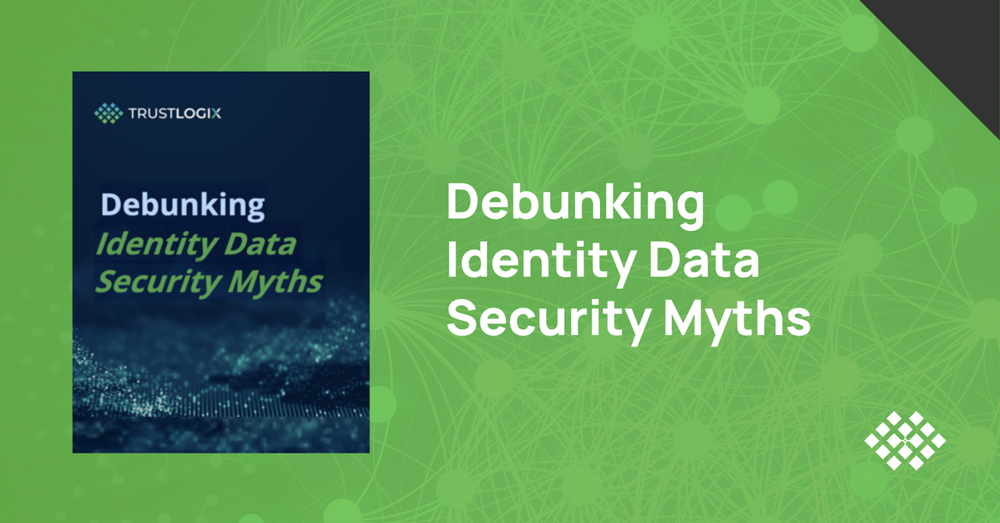
Debunking Identity Data Security Myths
Discover how unifying identity and data security with TrustLogix reduces complexity, strengthens compliance, and protects sensitive data. Read more Read more
Read More
AI Data Security: Risks, Best Practices & How to Protect Your AI Systems
Learn how to secure data and AI assets with best practices for AI/ML risks, LLM protection, and future-proofing AI security. Read more Read more
Read MoreSecuring Multi-Agent AI Pipelines for Telecom with TrustLogix and Snowflake
See how TrustLogix and Snowflake enforce purpose-, role-, and attribute-based access controls across autonomous AI pipelines in telecom — blocking unauthorized agent access in real time, at machine speed. Watch Now Watch Now
Watch Now
Securing Your AI Agents Before They Become Your Biggest Liability
Learn why AI agents are creating a "governance gap" in the enterprise. GigaOm’s Whit Walters shares 5 essential capabilities to secure your AI infrastructure and prevent agents from becoming a major data liability. Watch the full breakdown. Watch Now Watch Now
Watch Now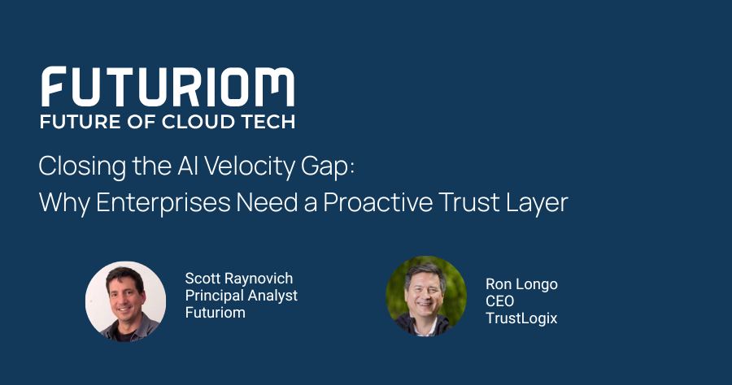
Closing the AI Velocity Gap: Why Enterprises Need a Proactive Trust Layer
Is the race for AI ROI forcing your organization to compromise on security? In this featured session, Scott Raynovich, Principal Analyst at Futuriom, and Ron Longo, CEO of TrustLogix, discuss how to eliminate the "Velocity Gap"—the friction between the urgent need to deploy AI and the complex task of securing it. Watch Now Watch Now
Watch Now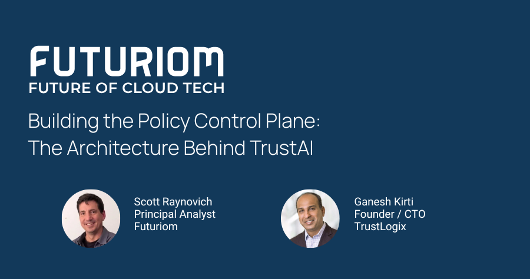
Building the Policy Control Plane: The Architecture Behind TrustAI
Learn how TrustLogix's unified Policy Control Plane governs autonomous AI agents at machine speed—enabling innovation while protecting sensitive enterprise data. Watch Now Watch Now
Watch Now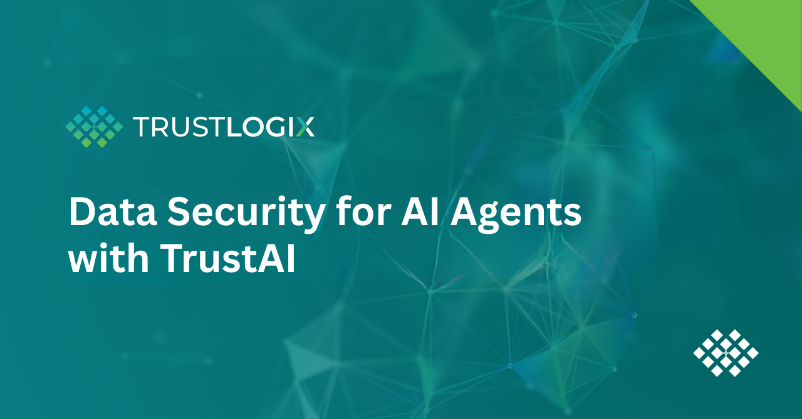
Data Security for AI Agents with TrustAI
Organizations can confidently scale AI initiatives by securing sensitive data, controlling AI agent access, and monitoring how data is used. Watch Now Watch Now
Watch Now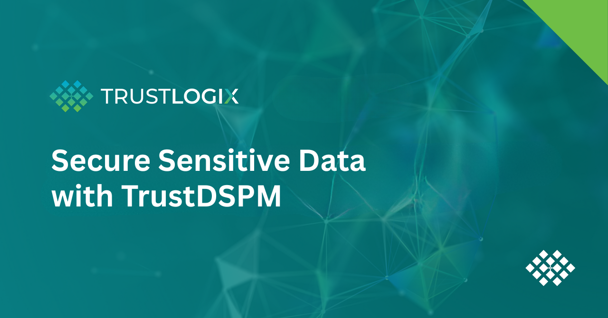
Secure Sensitive Data with TrustDSPM
Balance strong data security with seamless employee access by unifying visibility, context, and control at enterprise scale. Watch Now Watch Now
Watch Now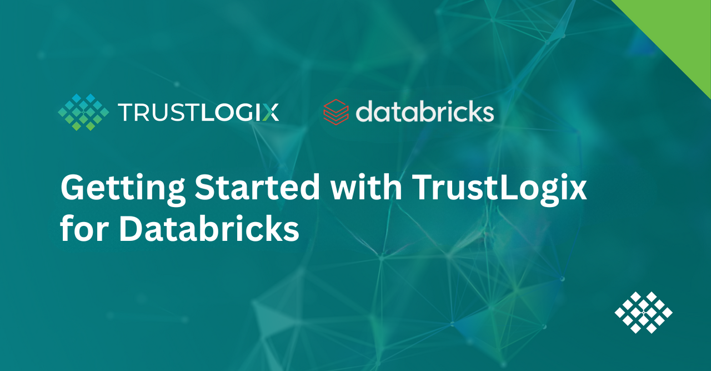
Getting Started with TrustLogix for Databricks
Getting Started with TrustLogix for Databricks Watch Now Watch Now
Watch Now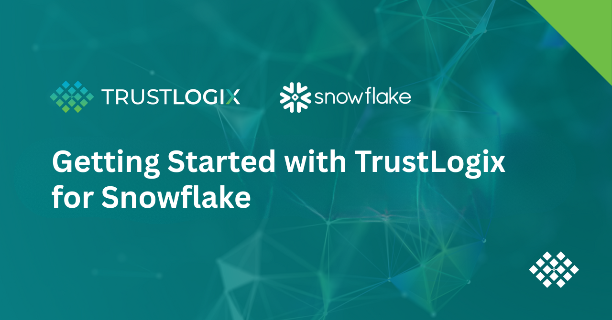
Getting Started with TrustLogix for Snowflake
See how to activate your TrustLogix account on Snowflake and start remediating data security issues in less than 2 hours. Watch Now Watch Now
Watch Now
Secure Data Access from Source to Dashboard
Extend Snowflake & Databricks access controls to Power BI with TrustAccess—no code, no duplication, no data exposure. Watch Now Watch Now
Watch Now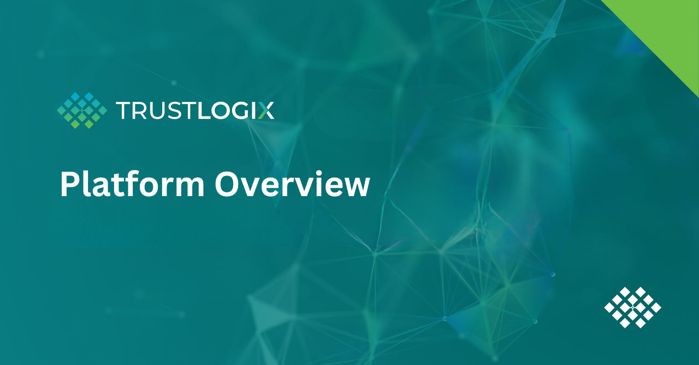
Platform Overview
Secure, simplify, and accelerate access across every data platform with complete visibility and instant, compliant control. Watch Now Watch Now
Watch Now
Resilient Data Security in Multi-Cloud Environments
Explore resilient multi-cloud data security with TrustLogix CEO Ganesh Kirti on Tech4Sight—Zero Trust, access control & AI. Watch Now Watch Now
Watch Now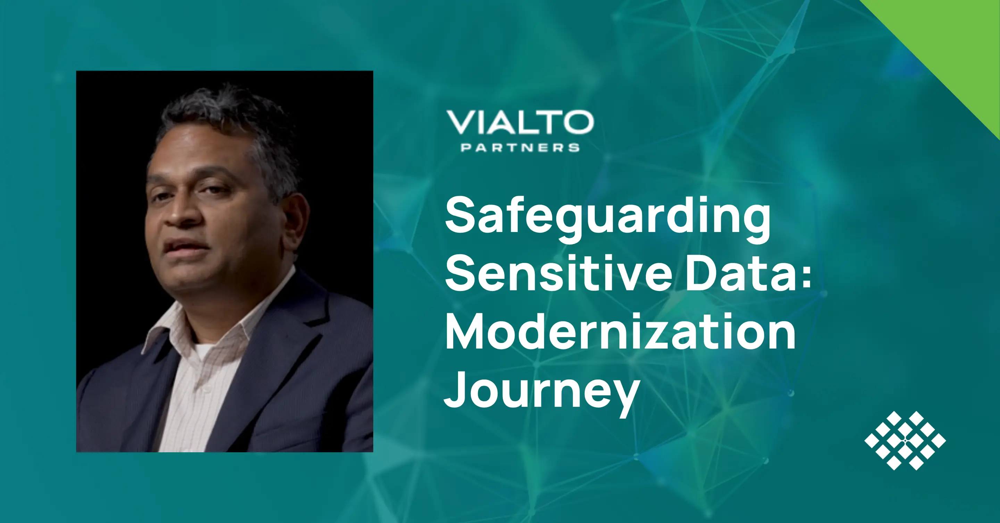
Safeguarding Sensitive Data: Vialto's Modernization Journey
Discover how Vialto Partners uses TrustLogix to enable secure, lightning-fast data access across global mobility services. Watch Now Watch Now
Watch Now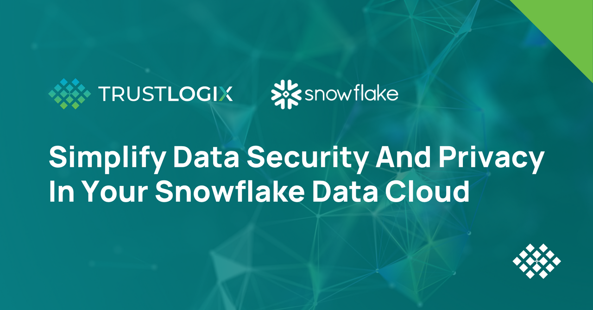
Simplify Data Security And Privacy In Your Snowflake Data Cloud
Simplify Snowflake data security with TrustLogix: unify access, cut manual work, enforce policies, and ensure compliance. Watch Now Watch Now
Watch Now
TrustLogix-Collibra Integration
See how TrustLogix integrates with Collibra to simplify Snowflake data security, policy creation, and access governance. Watch Now Watch Now
Watch Now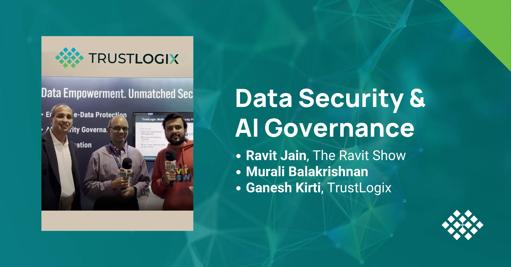
Data Security & AI Governance
Learn how leaders align governance, trust, and innovation to prepare for secure, AI-driven data platforms. Watch Now Watch Now
Watch Now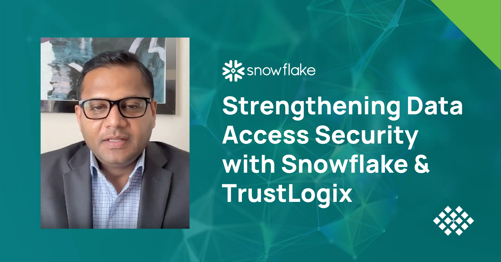
Strengthening Data Access Security with Snowflake and TrustLogix
Snowflake and TrustLogix partner to deliver automated, scalable, and secure data access with real-time visibility. Watch Now Watch Now
Watch Now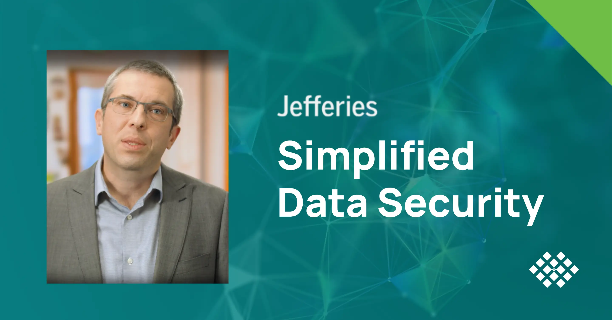
Simplified Security for Cloud Data at Jefferies
Discover how GFS cut data access time from days to minutes with TrustLogix’s scalable, secure cloud solution. Watch Now Watch Now
Watch Now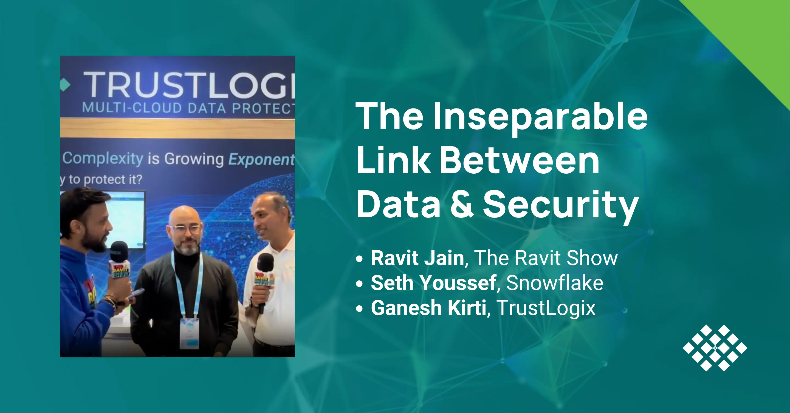
The Inseparable Link Between Data and Security with Seth Youssef of Snowflake
Discover how Snowflake & TrustLogix partner to secure data in the AI era. Watch Now Watch Now
Watch Now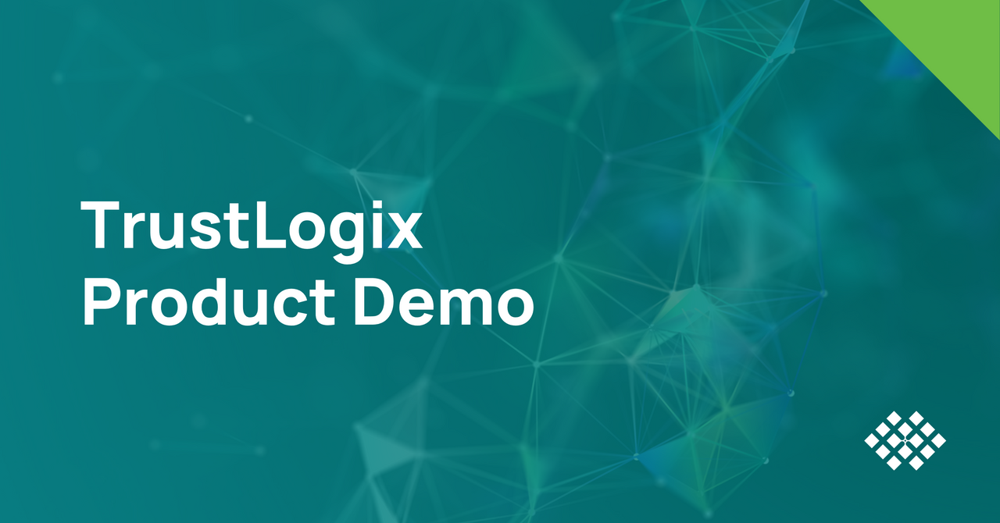
TrustLogix Product Demo
Learn how TrustLogix delivers continuous risk visibility and fine-grained access across cloud data platforms. Watch Now Watch Now
Watch Now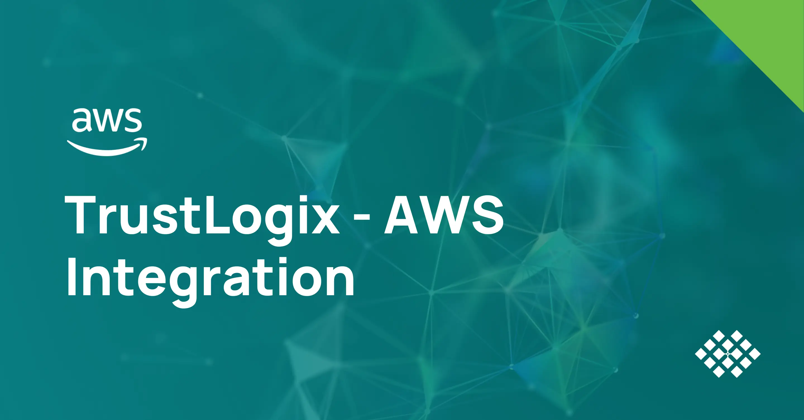
TrustLogix-AWS Redshift Integration
Simplify AWS data access with TrustLogix. See how to create secure, error-free policies across Redshift and more. Watch Now Watch Now
Watch Now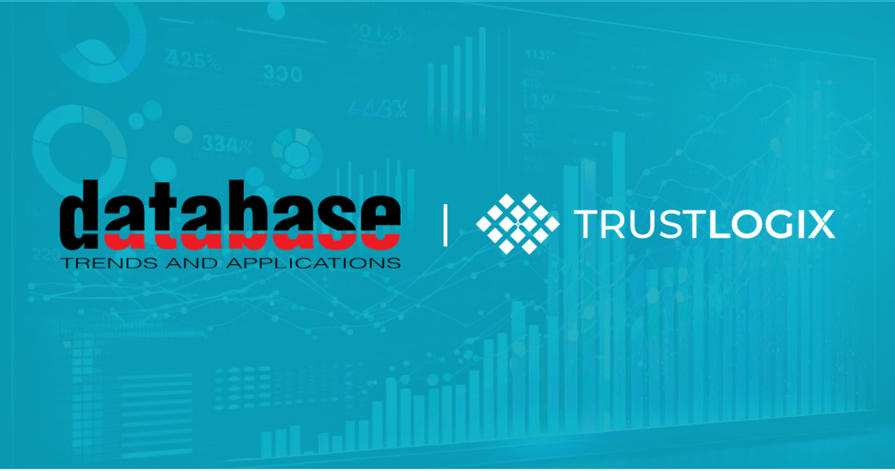
Self-Service Analytics Without the Chaos: Governing Insights at Scale
TrustLogix Field CTO Simon Thornell joins industry experts for a DBTA roundtable on delivering governed, analytics-ready data at scale. Read more Read more
Watch Now
AI-Native Telcos: Building the Secure Data Foundation for Autonomous Networks
In this webinar, experts from Ericsson, Snowflake, and TrustLogix explore how telecom providers can build secure, scalable data environments that enable autonomous operations and predictive insights Read more Read more
Watch Now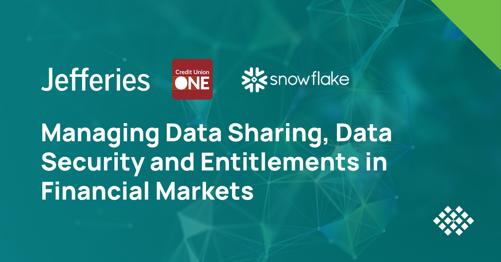
Managing Data Sharing, Data Security and Entitlements in Financial Markets
Financial leaders share strategies for balancing data security, innovation, and access in this expert webinar. Read more Read more
Watch Now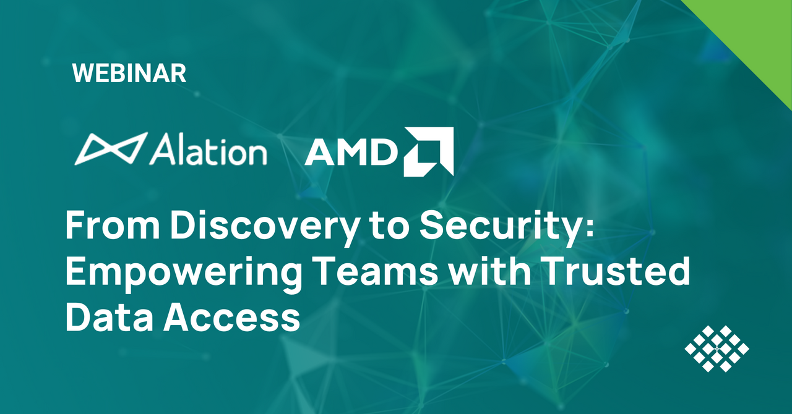
From Discovery to Security: Empowering Teams with Trusted Data Access
See how AMD leverages Alation + TrustLogix to enable trusted, secure, and business-ready data access. Read more Read more
Watch Now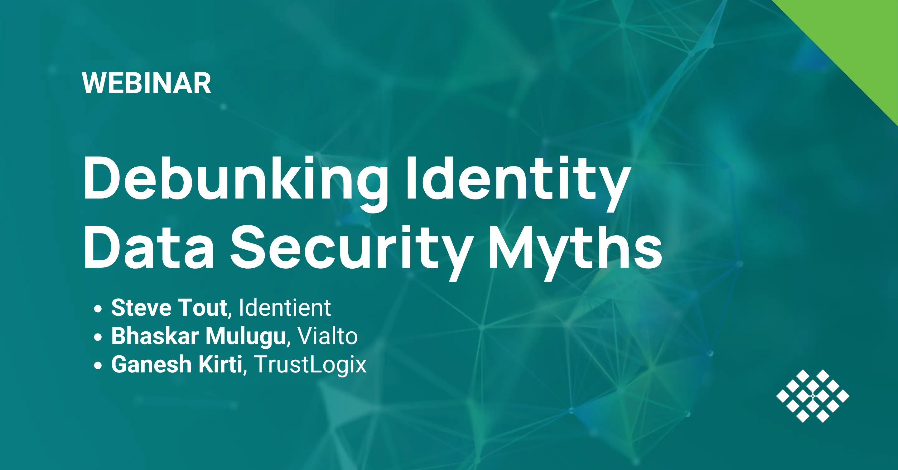
Debunking Identity Data Security Myths
Learn how integrated IAM and data security frameworks close gaps, boost compliance, and enable safe access. Read more Read more
Watch Now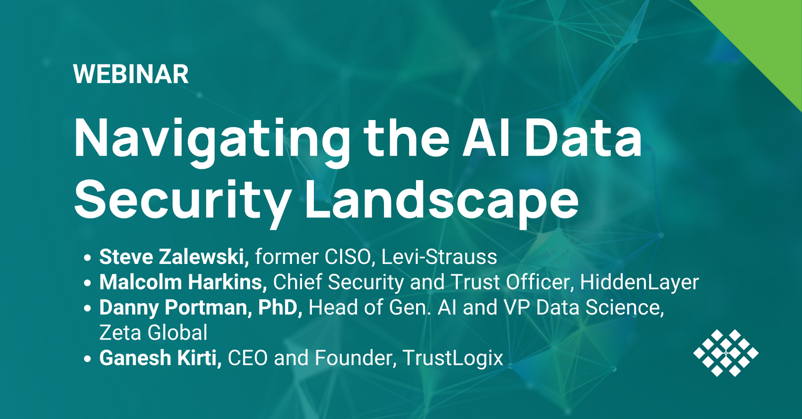
Navigating the AI Data Security Landscape
Discover insights on securing enterprise AI with proven approaches to governance and risk management. Read more Read more
Watch Now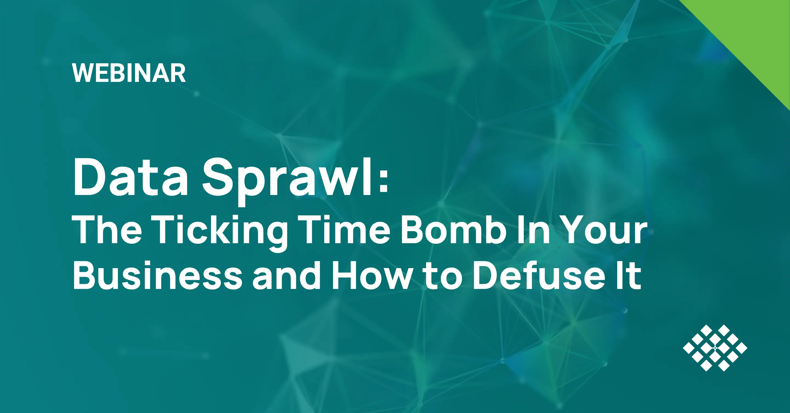
Data Sprawl: Experts from Tableau & KuppingerCole on Defusing the Cloud’s Biggest Risk
What is data sprawl and why is it a 'ticking time bomb' for cloud security? Learn how to discover shadow data and remediate stale entitlements with insights from Tableau and KuppingerCole. Read more Read more
Watch Now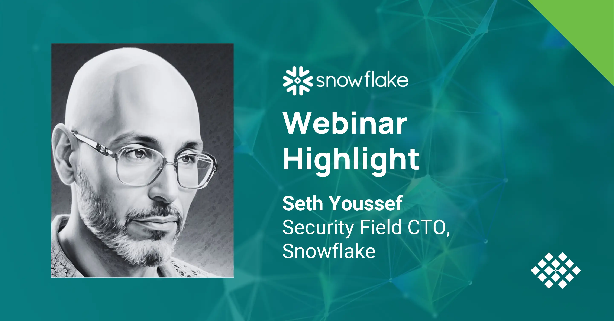
Webinar Highlight: Seth Youssef of Snowflake
Learn how Snowflake and TrustLogix deliver real-time policy enforcement and secure data sharing across accounts. Read more Read more
Watch Now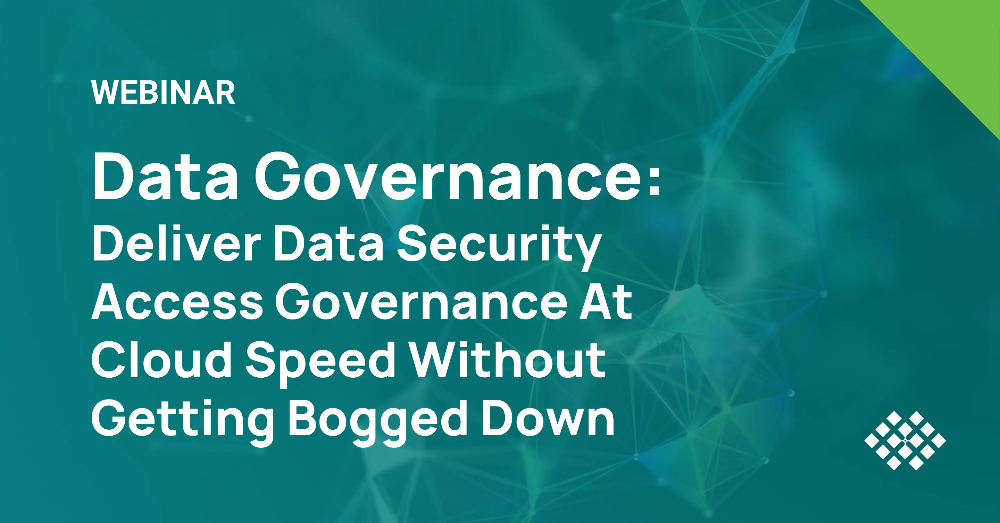
Deliver Data Access Security Governance At Cloud Speed
Experts from Snowflake, Zeta, Vigilance & TrustLogix share strategies for fast, secure, and compliant cloud data governance. Read more Read more
Watch Now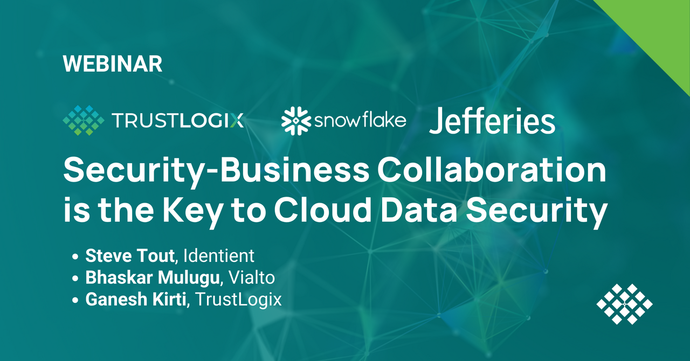
Security-Business Collaboration is the Key to Cloud Data Security Governance
Hear leaders from Jefferies, Snowflake & TrustLogix on bridging security and business in cloud data governance. Read more Read more
Watch Now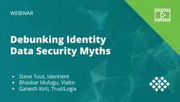
Snowflake Accelerate: Data Cloud Series
Learn how banking, insurance, and payments leaders harness cloud and data innovation in exclusive on-demand sessions. Read more Read more
Watch Now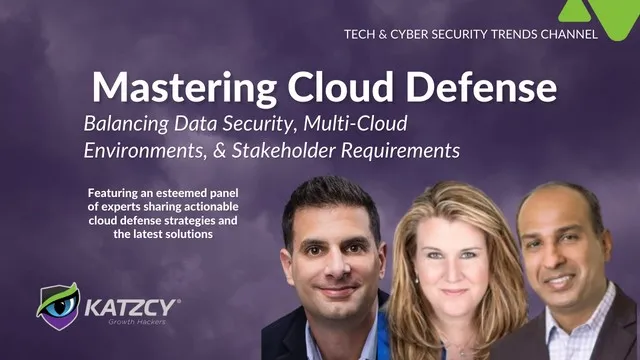
Mastering Cloud Defense: Balancing Data Security, Multi-Clouds, & Stakeholders
Learn strategies to balance data security and access in the cloud from leading cybersecurity experts. Read more Read more
Watch Now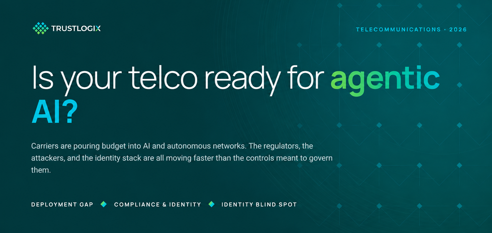
Is Your Telco Ready for Agentic AI?
Read more Read more This is some text inside of a div block.
Read More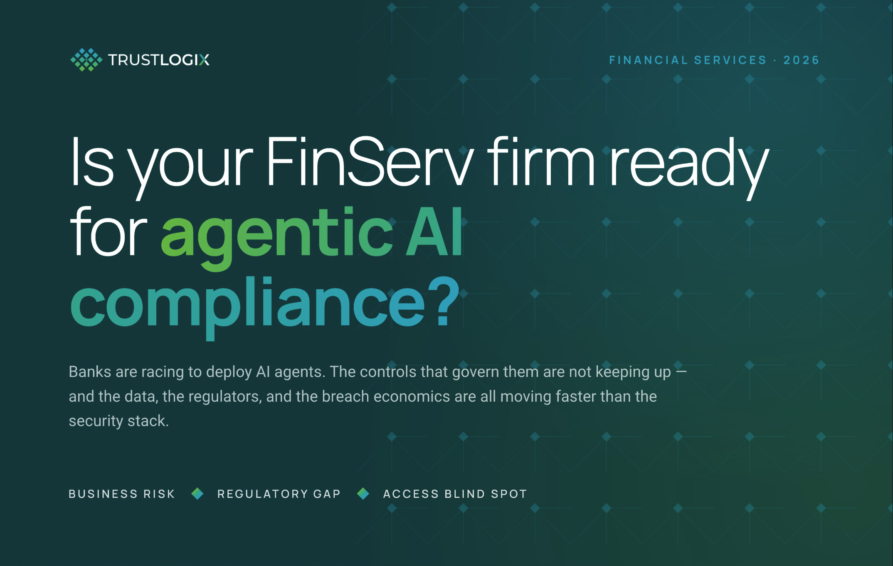
Is Your FinServ Firm Ready for Agentic Al?
Read more Read more This is some text inside of a div block.
Read MoreNo resources match your search.

Experience TrustLogix in Action
Schedule a call to discover how TrustLogix can accelerate your AI initiatives with faster, safer data access.